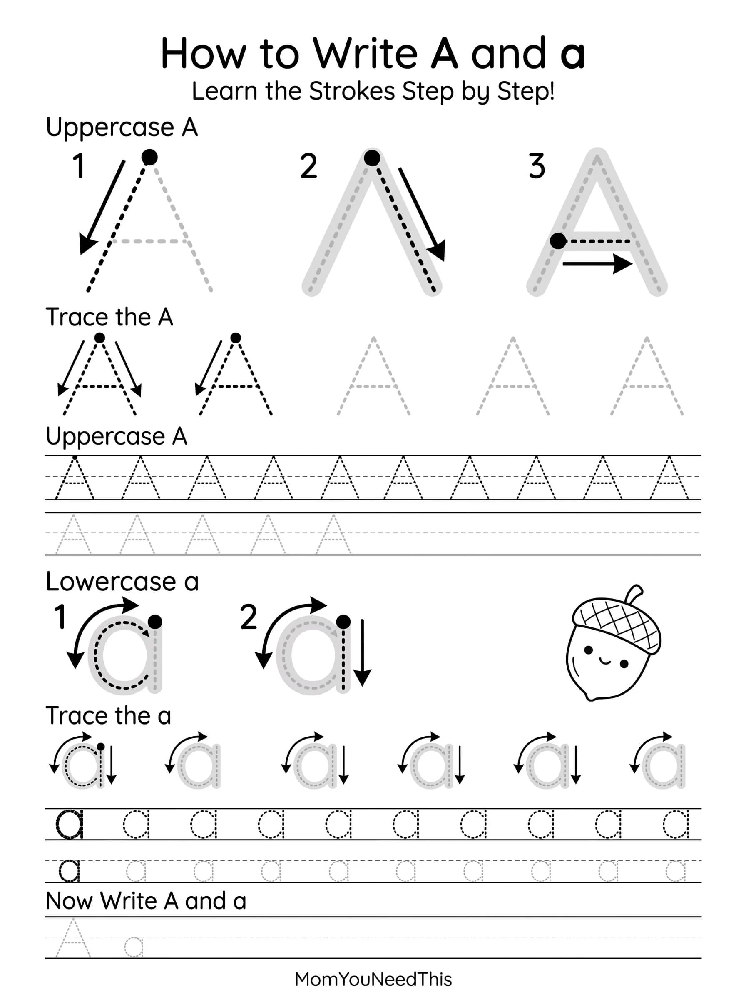

Letter A Formation Practice Free Printable Letter A Writing Practice For Kids
Letter A formation practice teaches the thing recognition pages cannot: how the letter is BUILT. Knowing what A looks like is one skill; knowing where the pencil starts, which way it travels, and when it lifts is another — and it is the second skill that turns into handwriting. This free printable gives toddlers and preschoolers guided tracing for both forms of A, with the stroke order made explicit: capital A's two slides and a crossbar, lowercase a's circle and stick.
Formation matters because habits set early are hard to undo. A child who builds A from the top, in the standard strokes, writes it quickly and legibly forever; a child who invents a bottom-up A fights the letter for years. Five minutes of guided formation now is the cheapest handwriting insurance there is.
✏️ Practice The Letter A
Use the printable to help your child practice the correct formation of uppercase and lowercase A, strengthen pencil control, and become familiar with the letter through simple tracing and writing practice.
Free Letter A Formation Practice Printable


How To Use This Printable
Download and print the tracing page — cardstock holds up best for little hands. Trace the first line together, showing your child where to start and which way to go, and narrate the strokes as the pencil moves: for capital A, “down the slide, down the slide, across the middle.” Narration is not decoration; children remember movement sequences in words before their hands can hold them alone.
Let them continue at their own pace down the rows. The rows shrink the guidance as they go — full traces first, then starting-dot letters, then freer attempts — so stay nearby for the first unaided row and celebrate the first A that stands up by itself.
Short sessions, ended while it is still fun, beat long drills. If the hand tires, stop mid-page and finish tomorrow; formation is a habit being grown, not a test being passed. A thick crayon or short pencil helps small hands grip without strain.
Why Practice Letter Formation?
Practicing letter formation builds pencil control, fine motor skills, handwriting confidence, and letter recognition in a single activity — but its unique gift is sequence. Writing is choreography: each letter is a small dance of strokes in a set order. A child who learns the dance writes fluently; a child who only learns the letter's photograph must redraw it from memory every time, slowly and often illegibly.
Formation practice also prevents the two classic A troubles before they start: the capital begun at the bottom (slow, and it never quite meets at the top) and the lowercase a written as a circle with an afterthought line floating beside it. Correct strokes, practiced while the letter is new, simply crowd out the wrong ones.
🎁 Keep Exploring Free Learning Activities
Discover more printable activities, toddler resources, and learning ideas created for busy parents.
🎁 View All Free Resources✏️ How Each A Is Built — Stroke By Stroke
Capital A — three strokes. Start at the top point. Stroke 1: slide down-left to the bottom. Stroke 2: back at the top, slide down-right to the bottom. Stroke 3: cross the middle with a short horizontal bar. “Down the slide, down the slide, across the middle” — the crossbar comes LAST, which is the detail beginners most often reverse.
Lowercase a — two strokes (print form). Stroke 1: draw a circle — start at the top, curve around and close it. Stroke 2: from the top of the circle's right side, pull a straight stick down to the line. The stick touches the circle; a gap between them makes the letter fall apart into a circle and a line, which is the error this page's tracing is built to prevent.
One honest complication to know: books print a different lowercase a (the double-story kind, like this text's “a” in many fonts) from the one children write (the single-story ball-and-stick). Both are the same letter. Your child will read the printed kind and write the written kind — point out the pair once, and the confusion most adults remember from childhood never takes root.
❓ Letter A Formation Practice FAQ
Is this letter a formation practice printable really free?
Yes — this Letter A formation practice printable is 100% free to download and print at home. No signup and no payment needed, just tap the download button. Cardstock is recommended for repeated tracing, and reprints are free when the first copy fills up.
What ages is this printable best for?
Capital A takes three strokes: slide down-left from the top, slide down-right from the top, then cross the middle. Lowercase a takes two: a circle, then a straight stick down its right side, touching the circle. The worksheet's tracing rows guide both, with starting points marked, and the narration “down the slide, down the slide, across the middle” helps children remember the capital's order.
What should my child trace with?
Formation is how a letter is built — the starting point, stroke order, and direction. Recognition is knowing the letter when you see it. Children need both, but they are different skills: a child can recognize A perfectly and still write it bottom-up with the crossbar first. This page teaches formation; the site's letter A pages (sound, coloring, tracing) build the recognition side.
🔗 More Free Printables You’ll Love
- Free Alphabet Coloring Pages Free printable alphabet coloring pages for little learners.
- Free Letter A Sound Match Free printable letter a sound match for little learners.
- Free Letter A Uppercase Lowercase Practice Free printable letter a uppercase lowercase practice for little learners.
- Free Letter Formation Practice Free printable letter formation practice for little learners.